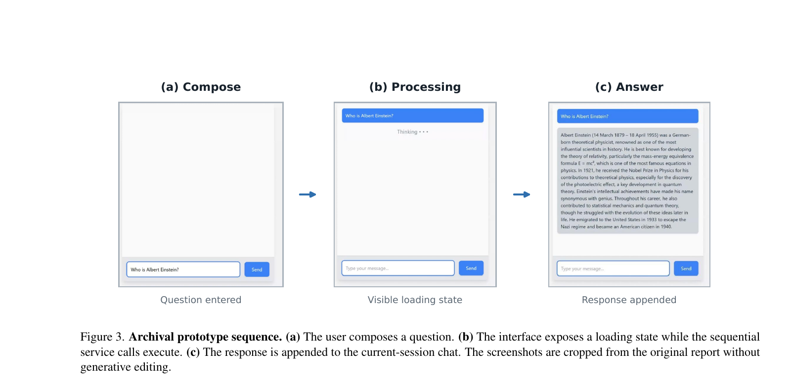
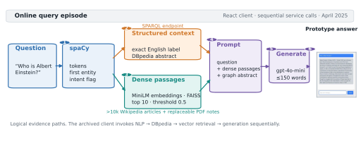
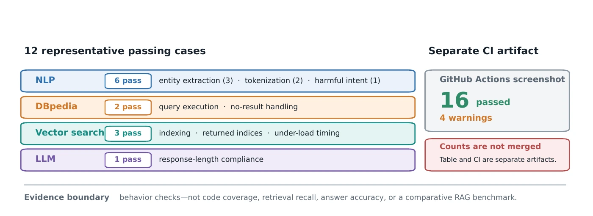
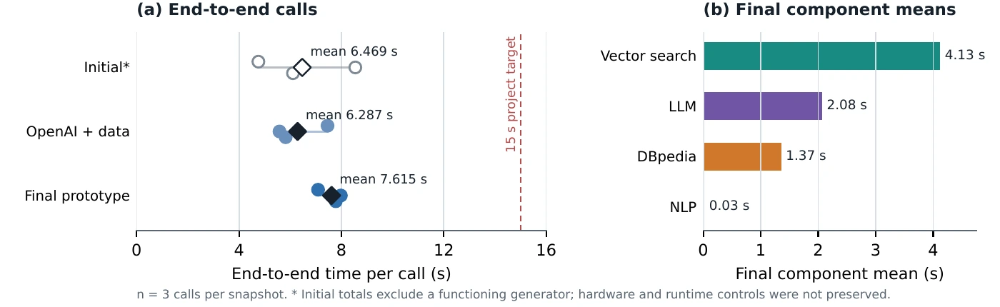

Abstract
Retrieval-augmented generation conditions a language model on information retrieved from an external corpus. This report presents KG-RAG Assistant, a senior capstone application that combines two retrieval paths: dense vector search over more than 10,000 Wikipedia articles and structured entity context from DBpedia. The system also supports a replaceable collection of PDF class notes to demonstrate retrieval over private or domain-specific material.
A React interface communicates with a FastAPI backend, where spaCy processes the question, SentenceTransformer encodes it, FAISS retrieves semantically similar text, SPARQL queries DBpedia for the first recognized entity, and an OpenAI model synthesizes the resulting context. The implementation is packaged with Docker as a modular systems prototype.
Archived 2025 Interface

The technical report preserves the original Spring 2025 compose, processing, and answer states. These screenshots document the archived interface behavior; they are not a retrieval-quality or answer-quality evaluation.
System Overview

The dense path encodes text with all-MiniLM-L6-v2, normalizes embeddings, and performs exact inner-product search with FAISS IndexFlatIP. Results below the configured similarity threshold are discarded.
The structured path uses spaCy to find the first named entity and constructs a SPARQL query for an English DBpedia abstract. Both contexts are supplied to the final response-generation prompt.
Archived System Evaluation
The preserved evaluation is software-engineering validation, not an information-retrieval or question-answering benchmark. The report documents twelve representative passing cases across NLP, DBpedia, vector search, and the LLM handler. A separate CI screenshot records sixteen passed tests and four warnings; the counts are not merged because the project record does not preserve a one-to-one mapping.


Limitations
Answer quality was not benchmarked on a fixed dataset. The project did not evaluate exact match, factuality, citation correctness, retrieval recall, or human preference, and therefore does not establish an accuracy advantage from knowledge-graph augmentation.
Entity processing uses the first spaCy entity and an exact English label in SPARQL. Questions with multiple entities, aliases, ambiguous names, or complex relations can return no context or the wrong resource.
The archived 2025 interface did not expose the selected passages or graph facts. The maintained repository adds a retrieval-trace interface, but its offline preview uses deterministic sample content and is not evidence of live retrieval or answer quality.
Reproducibility
The technical report records the April 2025 capstone implementation at commit 1ad5cc0. The current repository is the maintained v1.1.1 software release and includes later interface, documentation, dependency, and safety improvements.
- Interface review
- A deterministic fixture demonstrates source selection and the retrieval trace without requiring external services. It does not evaluate retrieval or answer quality.
- Maintained code checks
- Backend and frontend suites run independently in CI. Live DBpedia availability, OpenAI responses, network latency, and generated wording remain outside the deterministic test surface.
- Full retrieval prototype
- The Wikipedia corpus, embedding matrix, and FAISS index are versioned outside Git and verified against pinned integrity records before use.
Author Contributions
Molly Iverson, Ethan Villalovoz, Chandler Juego, and Adam Shtrikman jointly designed, implemented, tested, documented, and delivered the capstone system. Vikas Aditya provided project guidance and client feedback, and Parteek Kumar provided capstone instruction and supervision.
Paper
@techreport{iverson2025knowledgegraphrag,
title = {RAG Application Using Knowledge Graph and Vector Search},
author = {Iverson, Molly and Villalovoz, Ethan and Juego, Chandler and Shtrikman, Adam and Aditya, Vikas and Kumar, Parteek},
institution = {Washington State University},
year = {2025},
url = {https://knowledge-graph-rag.github.io/}
}@software{iverson2026knowledgegraphrag,
title = {Knowledge Graph RAG Assistant},
author = {Iverson, Molly and Villalovoz, Ethan and Juego, Chandler and Shtrikman, Adam},
version = {1.1.1},
date = {2026-07-19},
doi = {10.5281/zenodo.21445868},
url = {https://doi.org/10.5281/zenodo.21445868}
}